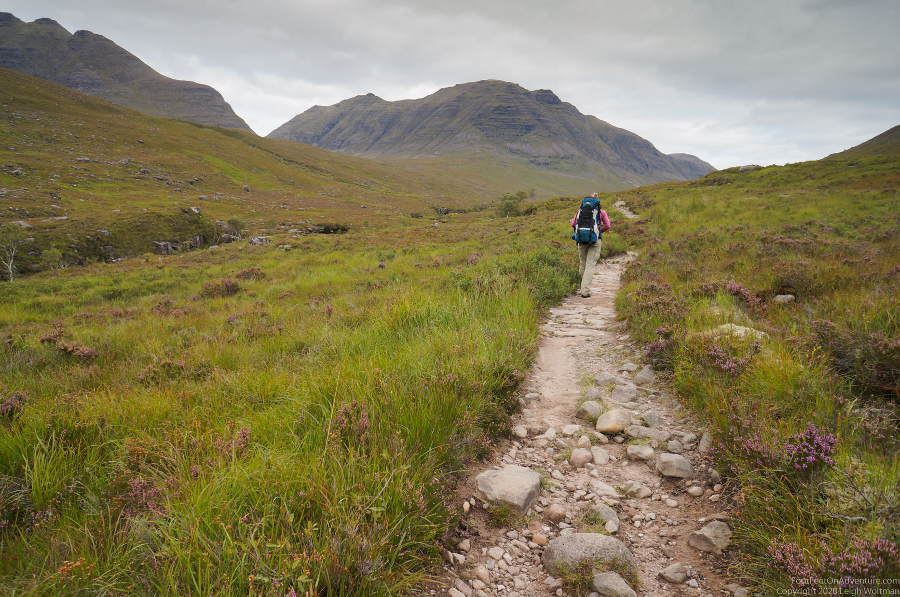
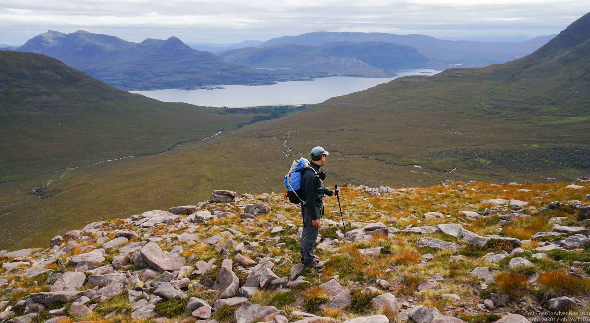
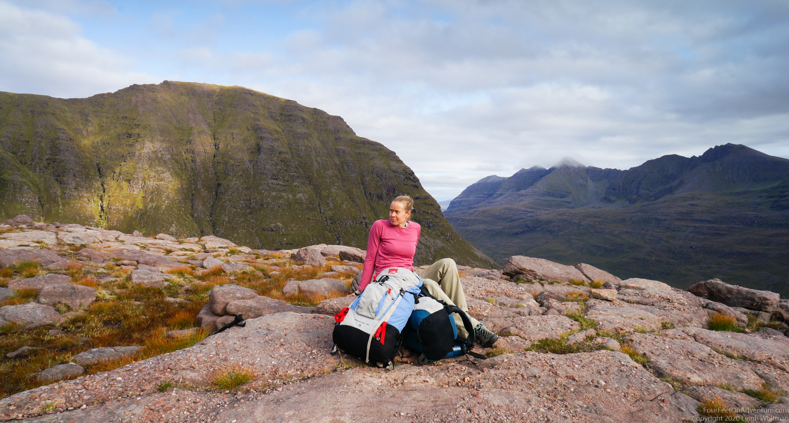
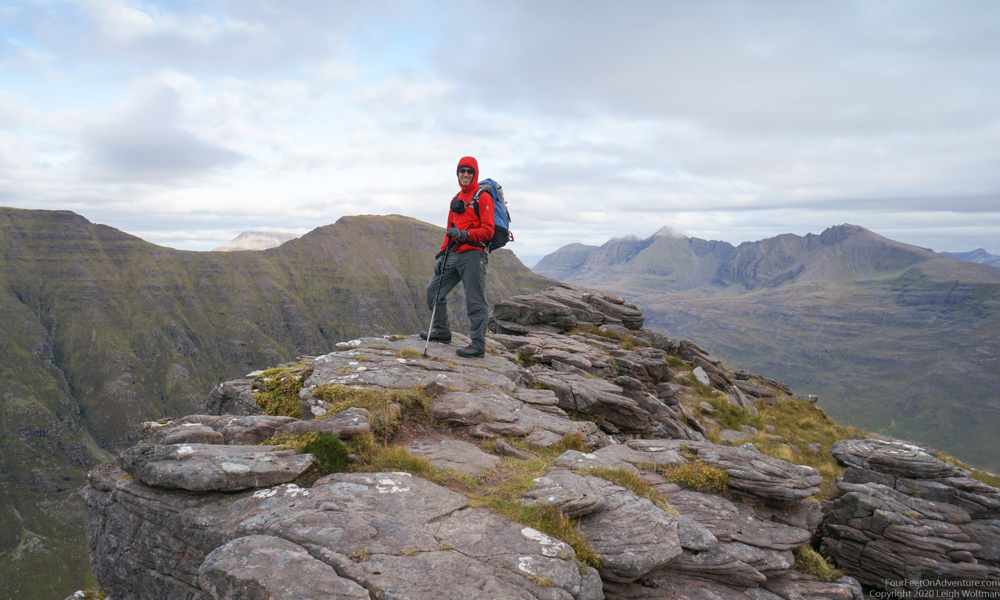
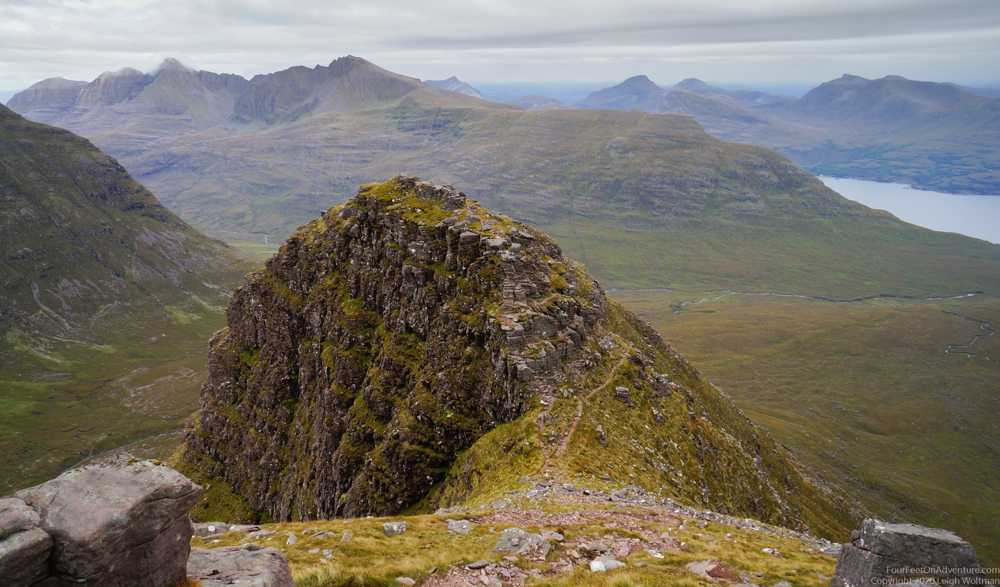
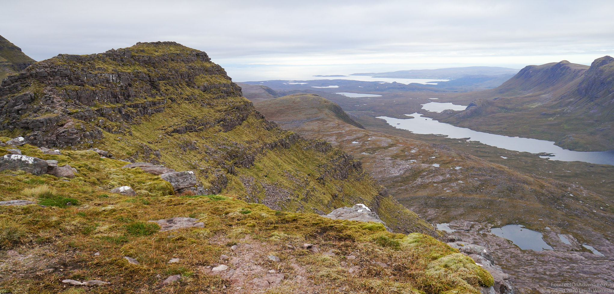
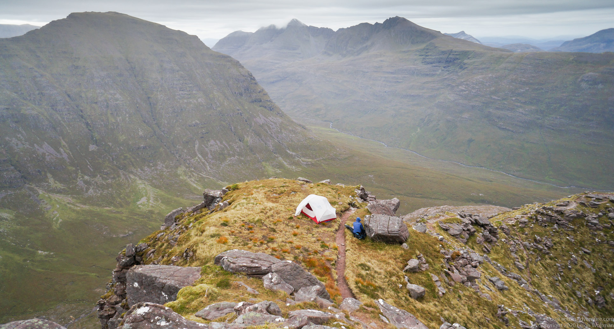
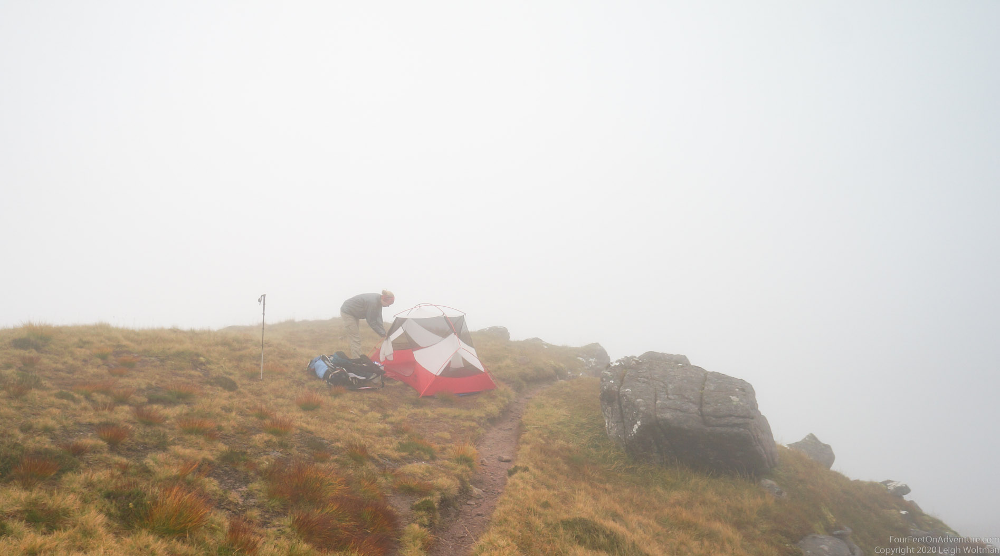
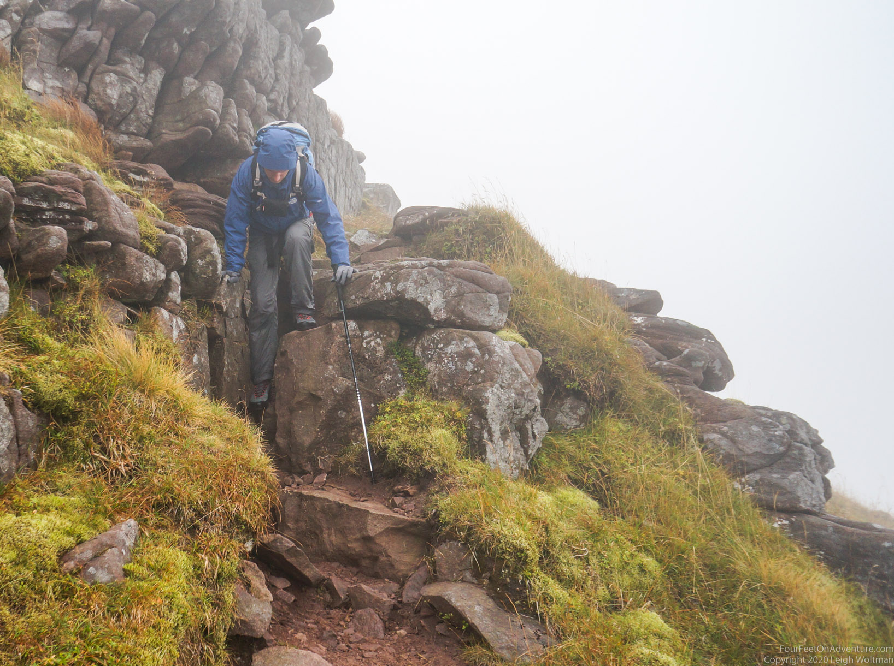
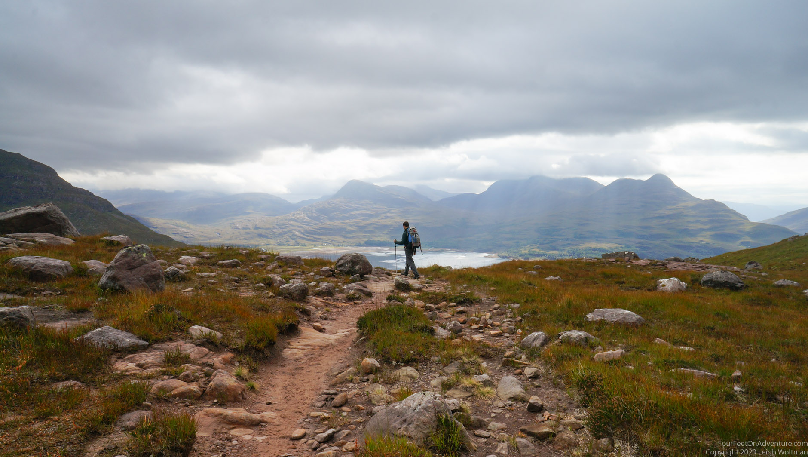

Email Us
Please send us an email, we would love to hear from you!

A monroe! The Torridon hills are made of Torridonian sandstone, which is amongst the oldest rock found in Britain. They tower like castles above the land. They are steep and have rock features that make them difficult to get on and off, and there are not many escape routes to be found. They are also beautiful and majestic, and provide great views around to, for example, the isle of Skye, the Western Isles and other hills in the area. Beinn Alligin has two peaks: Tom na Gruagaich (922 metres), and Sgùrr Mhòr at 986 metres. Right, off we go. I love this time of the year when the heath is blooming, and the bogs turn purple.

We picked a beautiful calm day. The view was supposed to be good, but you never know. We are lucky, the clouds are indeed high, and we can see to far away once we're up. These hills are popular and thus busy on a good day. Busy in Scotland means you meet about 20 - 30 people on a day. However, we started late and thus met only a few people. We had a rest on the first plateau area, where we also found some water. Water in Scotland is not scarce, but if it's dry and you're walking a ridge, it can be a challenge to find some.

Time for a rest, we know there is more to come yet!

Bein Alligin has three Horns, which are rocky pinnacles. There are probably some good climbs to be found but can be negotiated by scrambling without a rope. They are steep and a lot of fun. We enjoy moving around on them.

Looking back, we find that it's quite a narrow trail we just came from. We came over the top, but you can see a little bypass trail moving off to the right.

This is our neighbouring hill, which I'd like to think of as our neigbouring castle. Or is it a flappy-eared puppy lying on his belly with his head on his front paws? What do you see in this hill?
We've made it so high now that we can see the ocean.

After negotiating all three Horns and before heading to the first peak, Sgùrr Mhòr, we decide to turn back, following that little bypass trail we saw earlier. The reason? We saw a nice plateau for camping, and it's getting late. The plateau is a little wide so we wouldn't blow off the hill with the first wind gusts, and there is a rock, so we had some shelter from the wind for cooking and a bit for the tent. Feels like we're camping on top of the world!

We are glad we negotiated the Horns the evening before and saw the amazing views, because we wake up with our heads in the clouds. Literally. It takes a little while to get the motivation to leave the warm sleeping bag, and when Leigh fails to answer a question I look over and he has just fallen back asleep. I hang out for a while, then decide to make some breakfast, so that by the time he wakes back up there is a bowl of steaming oatmeal ready to go. You never know with these clouds, they could blow away in 5 minutes, or hang around the tops all day. It's unavoidable, at some point we just have to pack up and get going.

There is more rock to negotiate today, the trail here is never just an easy walk, which makes it more fun. The round sandstone rocks are a pleasure to walk through. Between the two tops we pass by Eag Dhubh na h-Eigheachd, a massive rockslide that happened apparently 3750 years ago and is one of the largest rockslides that happened in Britain. It is a very prominent feature from below but walking on the ridge it is not that much different than the rest of the ridge.

We did have some nice views in the saddle between the tops, as the clouds were stuck on one side of the top. And of course, as soon as we were close to the car the clouds disappear all together. As they like to do.... It's too bad the hills are often in the clouds, but on the other hand, it makes the views more mysterious and when it's not a given you'll see anything, it does feel more special when you do. Time to head back down after another wonderful adventure.

Please send us an email, we would love to hear from you!